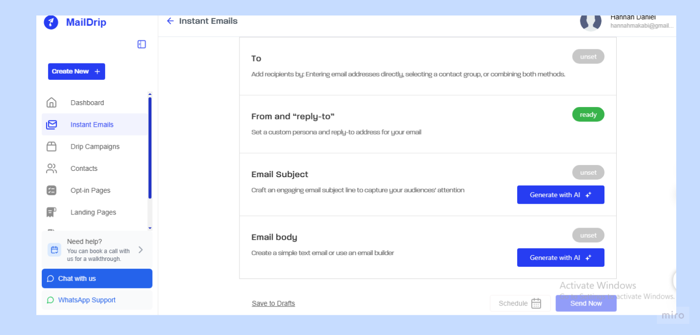
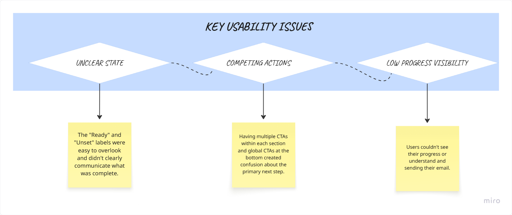
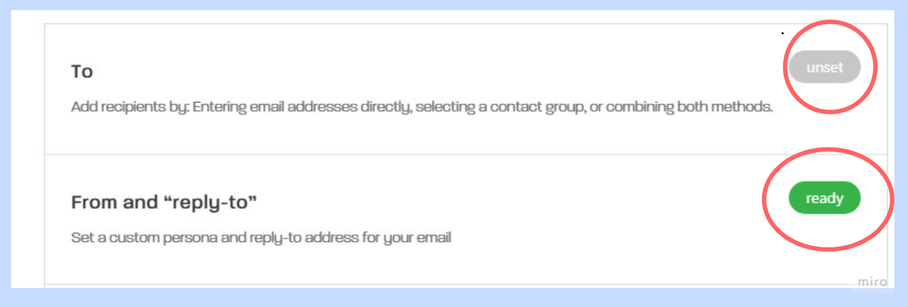
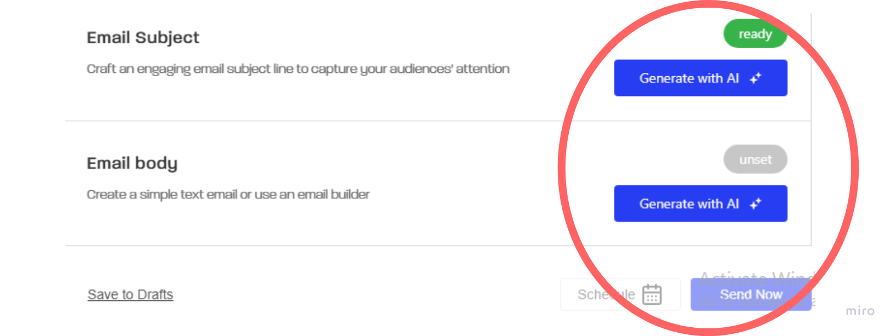
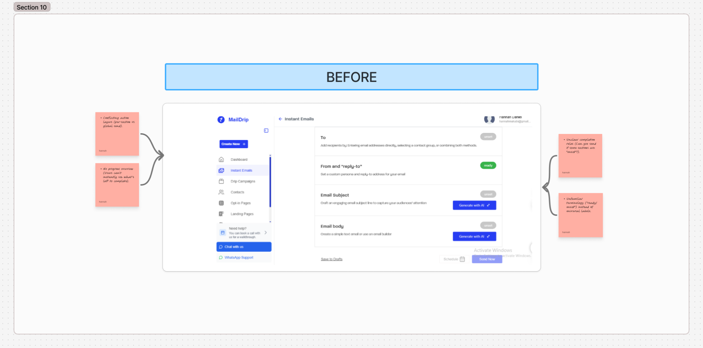
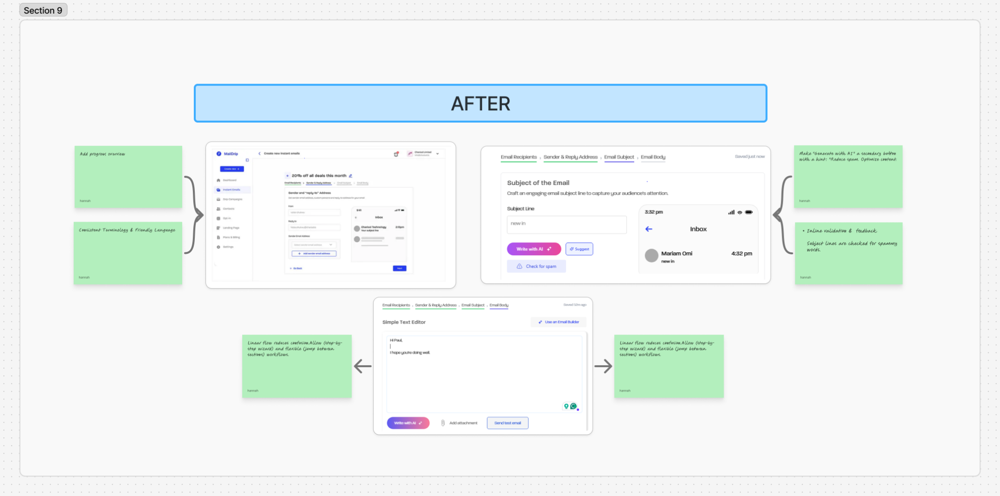
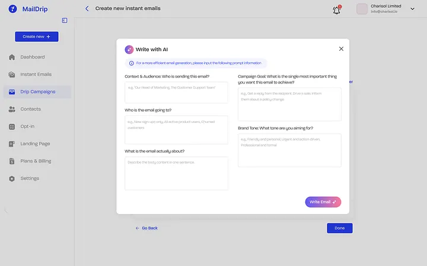
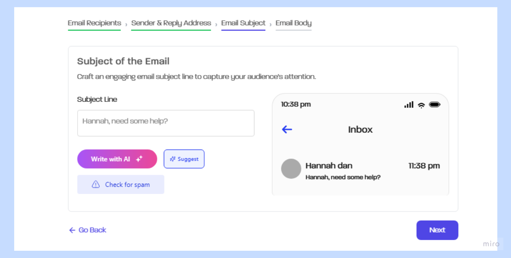
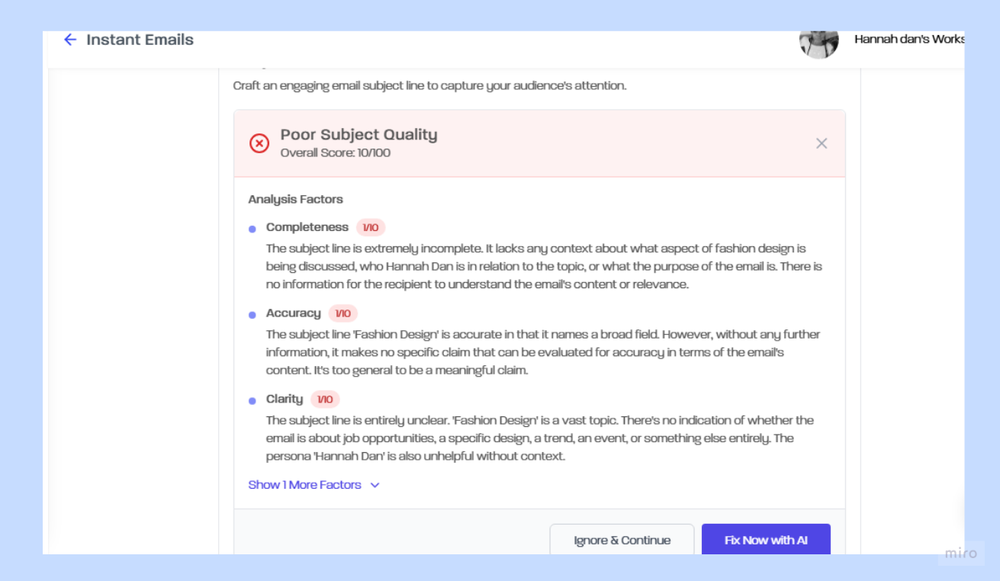

Reducing Friction in MailDrip's Instant Email Experience
Improving the Instant Email workflow by identifying where users were getting stuck, understanding why, and turning those findings into clearer product guidance.
Role
Lead UX Researcher
Methods
Heuristic Evaluation • Workflow Audit • Competitor Analysis • Customer Feedback • Walkthrough Observations • UX Best Practice Review
Methods Used
6
Usability Issues Found
4
Improvements Shipped
7
Focus Area
Instant Email
The Challenge
MailDrip's Instant Email feature was designed to help users create and send emails quickly.
But during walkthroughs and feedback sessions, it became clear that the problem wasn't whether the feature worked.
Users weren't always sure how to use it.
They struggled to understand:
- What they had already completed
- What they needed to do next
- Which action mattered most
- Whether they were ready to send
- What the different status labels meant
The workflow had the functionality users needed, but the experience wasn't giving them enough direction.

Usability Issues Identified
Ambiguous Toggle Labels (Ready / Unset)
Multiple Calls to Action (Per Section vs Global)
Button Placement & Hierarchy

Why We Investigated
The Product team wanted to understand why users were experiencing friction even though the workflow was already functional.
I focused the research around a few questions:
- Where were users getting stuck?
- What was causing hesitation?
- Were the completion states clear enough?
- Were too many actions competing for attention?
- How were similar products handling these moments?
- Where could MailDrip give users better guidance without adding unnecessary complexity?
My Role
As the Lead UX Researcher, I:
- Defined the research objectives
- Conducted a heuristic evaluation
- Audited the existing workflow
- Reviewed customer feedback and walkthrough observations
- Analysed competitor experiences
- Reviewed UX patterns and best practices
- Synthesised the findings
- Presented recommendations to Product and Design
- Supported conversations around implementation and product direction
Research Approach
Rather than jumping straight into a redesign, I first looked at the experience from multiple angles.
I examined:
- The existing workflow — Where users moved, paused, hesitated, or became unsure.
- The interface — How labels, states, buttons and hierarchy communicated what users should do.
- User feedback — What customers were actually confused about during walkthroughs and support conversations.
- Competitors — How other email marketing products handled similar creation, quality, and spam-related moments.
This helped separate surface-level UI problems from the deeper reasons behind them.
What We Found
01 — Completion wasn't clear enough
The "Ready" and "Unset" states didn't give users enough confidence about what was complete and what still needed attention.

02 — Too many actions competed for attention
Section-level actions and global actions made it harder to tell what the primary next step was.

03 — The workflow lacked a clear sense of progress
Users had limited visibility into where they were in the process and how close they were to completing their email.
04 — AI needed more context to be useful
The existing AI experience could generate content, but the quality of the output depended heavily on how much context the user provided.
That raised another question:
Could we help users give the AI the information it actually needed?
The Competitive Insight
The competitor review uncovered something important.
Other email marketing tools were already helping users think about things like spam risk, content quality and email performance.
MailDrip already had an AI capability and a scoring system.
The opportunity wasn't simply to add another AI feature.
It was to connect the AI to the user's actual goal.
Instead of generating generic content, the experience could ask for the context that would make the output more relevant:
Who is sending this?
Who is it for?
What are you trying to achieve?
What should the email sound like?
That gave the AI a much clearer job to do.
From Findings to Product Direction
The research led to changes across the Instant Email experience.
Make progress easier to understand


Instead of making users interpret ambiguous states, we explored clearer completion feedback and a more guided workflow.
Reduce competing actions
The experience was reorganised so users could more easily understand the primary action at each stage.
Make AI generation more intentional

The AI flow was structured around the information that actually affects the quality of an email.
Rather than:
"Generate an email."
The experience began asking for useful context around audience, campaign goal, content and brand tone.
Bring quality checks closer to the task
Spam checking and content guidance became part of the email creation experience rather than something users had to think about separately.


What Changed
The research helped move the conversation from:
"What else should we add?"
to:
"How can we make what already exists easier to understand and more useful?"
The resulting direction focused on:
- Clearer completion states
- Stronger visual hierarchy
- Fewer competing actions
- Better progress guidance
- More contextual AI generation
- Spam and content-quality guidance
- A more intentional email creation flow
Validation & Iteration
The recommendations were not treated as a final answer.
As changes were explored, I continued looking at whether they addressed the original problems and whether new friction was being introduced.
This helped the team refine the experience around:
- onboarding into the email workflow
- completing each section
- understanding AI actions
- improving generated content
- identifying potential spam issues
- moving confidently toward sending
Impact
The research shifted the focus from adding functionality to reducing uncertainty.
It gave the Product and Design teams clearer direction around:
- How users understood the workflow
- Where the interface was creating unnecessary cognitive load
- How completion states should communicate progress
- Where AI could provide more useful assistance
- How competitor patterns could inform MailDrip's own experience
Most importantly, the research helped connect usability findings with actual product decisions rather than treating the evaluation as a list of UI problems.
Key Takeaway
The biggest lesson from this work was simple:
A feature can be complete and still feel difficult to use.
The work wasn't about adding more to Instant Email.
It was about helping users understand where they are, what they need to do, and how MailDrip can help them do it well.
Users weren't always sure how to use it.
Helping users understand where they are, what they need to do, and how MailDrip can help them do it well.